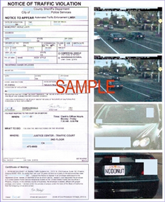

What Constitutes a Violation
Copy is for placement only. A speed violation, based on the Maryland Code, Transportation Article §21-809, is considered for vehicles travelling at or above the threshold speed, defined in the legislation as 12 miles per hour above the posted speed limit. A typical speed citation includes two time stamped images of the violating vehicle with a stationary object in the frame. The two images show progression of the vehicle during that time period.
Violations from red light enforcement cameras, as referenced in Maryland Code, Transportation Article §21-202 and Transportation Article §21-202.1 are considered when a vehicle fails to stop at a marked stop line on a steady red signal indication and either (1) proceeds straight through the intersection or makes a left turn or (2) makes a right turn on red (a “rolling right turn”). The typical citation for red light violation includes two images of the violating vehicle at the intersection with the red signal displays. The first image captures the vehicle at the near side of the intersection just before the marked stop line facing a red signal display. The second image captures the vehicle inside the intersection with the signal display being red. A video is also captured that provides evidence for all red light violations and specifically rolling right on red violations.
The vendor will review each event and make preliminary decisions as to whether they meet the City’s violation criteria.
Each speed camera must undergo a daily verification self-test before violations can be captured. Trained Operators of the Baltimore Police Department log on using the System software and complete a Daily Setup Log and test shot for each location. This ensures accuracy in each camera, radar, correct enforcement speed, and that citations are only being issued during proper violation hours (6 am- 8 pm) all verified by trained Operators.
Red Light cameras do not require a daily verification and are active 24/7 throughout the year. Images are encrypted upon capture and cannot be changed. Events are downloaded daily from the cameras to a central server in downtown Baltimore, where they are then accessed by the Vendor’s personnel using a violation processing system software.
During the first review the vendor’s analyst reviews the images or videos (Red Light) using the Business Rules as a guide and validates if the captured image constitutes a violation or not. This process takes approximately one day. At the end of the review, license plate information is sent to Motor Vehicle Administration (MVA) or National Law Enforcement Telecommunication System (NLETS) (for Out-of-State) to obtain registered vehicle owner information. Once the registration information is obtained, the appropriate fields are populated in the dataset and the violation is reviewed a second time by a different analyst for semifinal review and approval. Baltimore Police Department trained Officers then review and either approve or reject violations via the system software based on City of Baltimore Business Rules and MD laws applying to speed and red light violations. Upon approval, citations are mailed by the vendor with officer signatures certifying the citation utilizing United States Postal Service (USPS) first class mail.